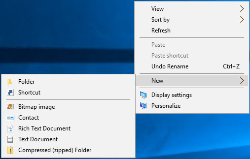

Construct Dockerfile
Overview
Based on most of the previous steps, we are ready to build our Dockerfile. We will mimic those steps for automating our image construction.
Review
In preparation of writing our Dockerfile, let's review all the steps we've performed up to this point.
- Install the latest version of Windows Server. Typically, we would use Windows Nano Server which is designed for containerized deployments. However, preparing a Nano Server container requires Hyper-V and is a little more in-depth than what we want to accomplish for this workshop, wo we'll stick with Windows Server 2016.
- Install the latest updates
- Install and configure Docker
- Install and configure IIS
- Configure the firewall
- Download the sample website
As a reminder, since we are constructing an image, we can ignore step 3. We won't need Docker installed inside of the image. Additionally, Microsoft is nice enough to provide us an image with IIS installed and the firewall configured. This allows us to ignore steps 4 and 5, as well. All we are required to do is install updates, Microsoft.NET and download our website.
Create the Dockerfile
Let's go ahead and create the Dockerfile contents. We'll then examine each line below.
-
We need to create a Dockerfile. Somewhere on your desktop, right-click, then click New, followed by Text Document. 
-
Name the new file Dockerfile. (Note: This will add the ".txt" extension to the file automatically. Typically, our Dockerfiles shouldn't have an extension, but that's okay. We'll work with it.)
-
Enter the following without the line numbers. The line numbers are provided for reference below.
1 FROM microsoft/iis:latest
2 SHELL ["powershell"]
3 MAINTAINER Your Name <you@yourcompany.com>
4
5 RUN Install-WindowsFeature NET-Framework-45-ASPNET ; \
6 Install-WindowsFeature Web-Asp-Net45 ; \
7 Install-WindowsFeature Web-App-Dev ; \
8 Install-WindowsFeature Web-Net-Ext45 ; \
9 Install-WindowsFeature Web-AppInit ; \
10 Install-WindowsFeature Web-ISAPI-Ext ; \
11 Install-WindowsFeature Web-ISAPI-Filter ;
12
13 RUN Invoke-Command -ScriptBlock {$ci = New-CimInstance -Namespace root/Microsoft/Windows/WindowsUpdate -ClassName MSFT_WUOperationsSession; Invoke-CimMethod -InputObject $ci -MethodName ApplyApplicableUpdates; exit }
14
15 RUN mkdir C:\temp
16
17 RUN (new-object Net.WebClient).DownloadFile('https://github.com/AzureWorkshops/samples-simple-iis-website/archive/master.zip','C:\temp\master.zip');
18 RUN Expand-Archive -LiteralPath C:\temp\master.zip -Destination C:\temp
19 RUN (new-object -com shell.application).namespace('C:\inetpub\wwwroot\').CopyHere((new-object -com shell.application).namespace('C:\temp\samples-simple-iis-website-master').Items(), 16);
20 RUN del c:\inetpub\wwwroot\iisstart*.*
21
22 EXPOSE 80
- To save, Ctrl+S
Explanation
First, if you remember from the previous steps, we were required to open a PowerShell prompt as an Adminstrator to allow the command to be executed with elevated privileges. By default, all Docker images execute under the identity of the built-in Administrator account.
Line 1: Specifies the base image, including the tag, with which we're starting. In our case, we are using the Microsoft Windows Server 2016 with IIS as the base image.
Line 2: Directs Docker to run everything from a PowerShell shell (not the default DOS/CMD prompt).
Line 3: Specifies the owner of the image with their email address.
Lines 5-11: Installs the Microsoft.NET Framework for ASP.NET and the ASP.NET extensions into IIS. Most of these should already be installed by default for the image we're downloading. However, this ensures that our system is up-to-date.
Line 13: Installs any necessary system updates. NOTE: On a host system or virtual machine, we would normally require a reboot. However, because we are simply building an image, the image will stop naturally once it's built. We will then only boot the image once we load it into a container. Therefore, we theoretically have a built-in reboot in our process and a reboot here is not necessary.
Line 15: Creates a temp folder in which to store our .zip file. In our demo, we downloaded the .zip file to our temporary D:\ drive. We don't have that drive in the container, so we'll use a temporary folder.
Line 17: Downloads the .zip file for our website to our C:\temp folder.
Line 18: Decompresses (expands) our .zip file into the C:\temp folder.
Line 19: When we decompress our .zip file, we create a subdirectory called samples-simple-iis-website-master. Here, we are copying the contents of that subfolder to our main IIS folder C:\inetpub\wwwroot.
Line 20: Deletes the two IIS placeholder files.
Line 22: IIS, by default, uses port 80. Therefore, similar to a firewall in the image, we open, or expose, the port to the outside host. We will bind to this open port later when we run a container based on this image. NOTE: This particular image, microsoft/iis, already exposes port 80 for us, so we're technically not required to add this line. However, it's still a good practice to explicitly include this line in case we need to reuse this Dockerfile or the underlying base ever changes.
That's it! That's all there is to creating a Dockerfile.